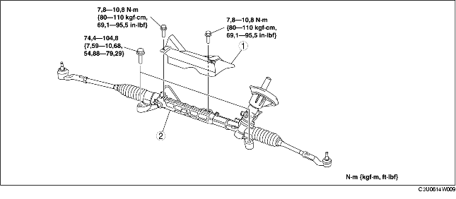

DEPOSE/REPOSE DE BOITIER ET DE TIMONERIE DE DIRECTION
B3E061432960W01
-
Attention
-
• Effectuer les procédures suivantes sans déposer au préalable le capteur ABS de vitesse de roue est susceptible de provoquer une ouverture de circuit dans le faisceau de câblage, s'il est retiré par erreur. Avant d'effectuer les procédures suivantes, débrancher le connecteur du capteur ABS de vitesse de roue (côté essieu), et fixer le faisceau de câblage à un endroit où il ne peut être tiré par erreur au cours de l'entretien du véhicule.
1. Déposer la barre transversale avant, le bras inférieur, le stabilisateur avant, le boîtier et la timonerie de direction comme un bloc d'un seul tenant. (voir la section DEPOSE/REPOSE DE BARRE TRANSVERSALE AVANT.)
2. Déposer les différents éléments selon l'ordre indiqué dans le tableau.
3. Pour la repose, suivre l'ordre inverse de la dépose.
4. Après la repose, inspecter l'alignement des roues avant, et opérer les réglages nécessaires. (voir la section GEOMETRIE DES ROUES AVANT.)

.
|
1
|
Isolateur
|
|
2
|
Boîtier et timonerie de direction
|